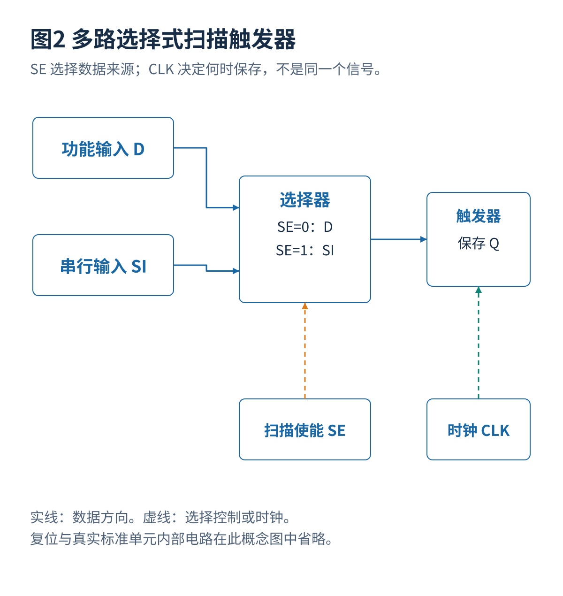
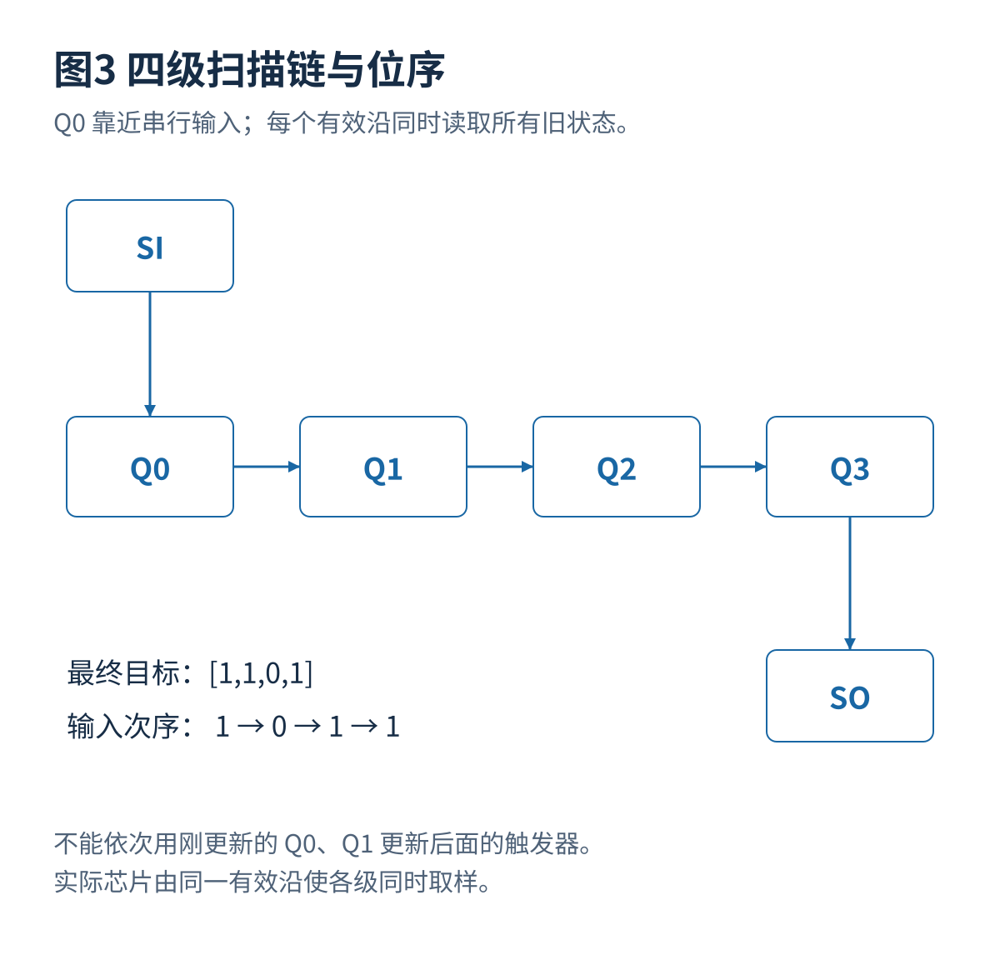
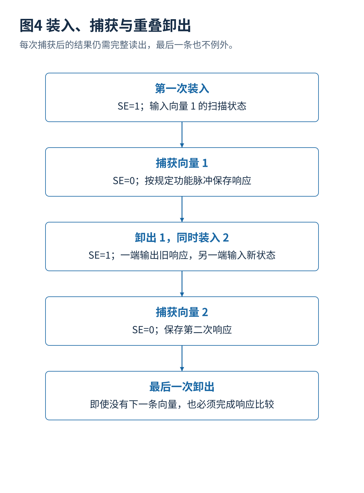
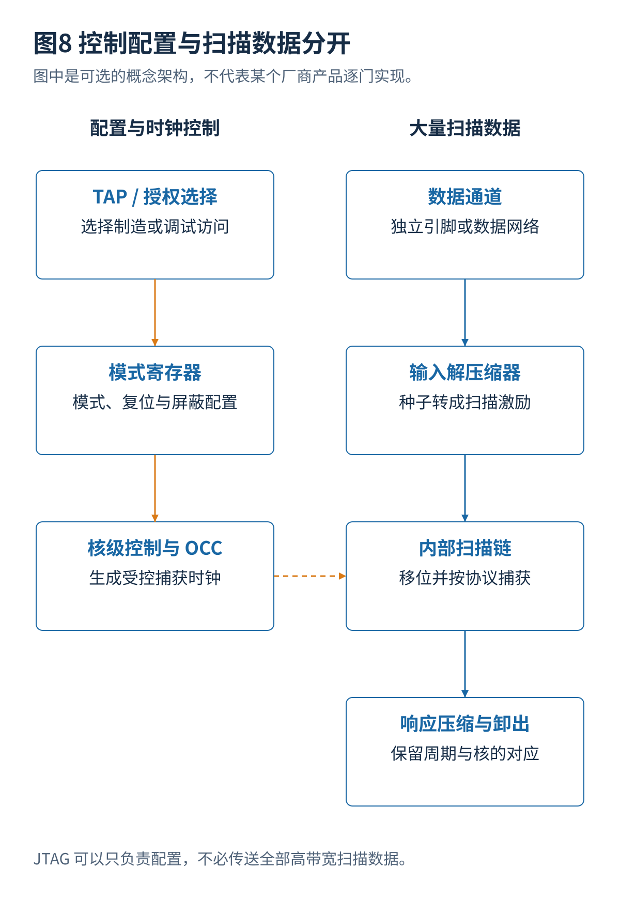
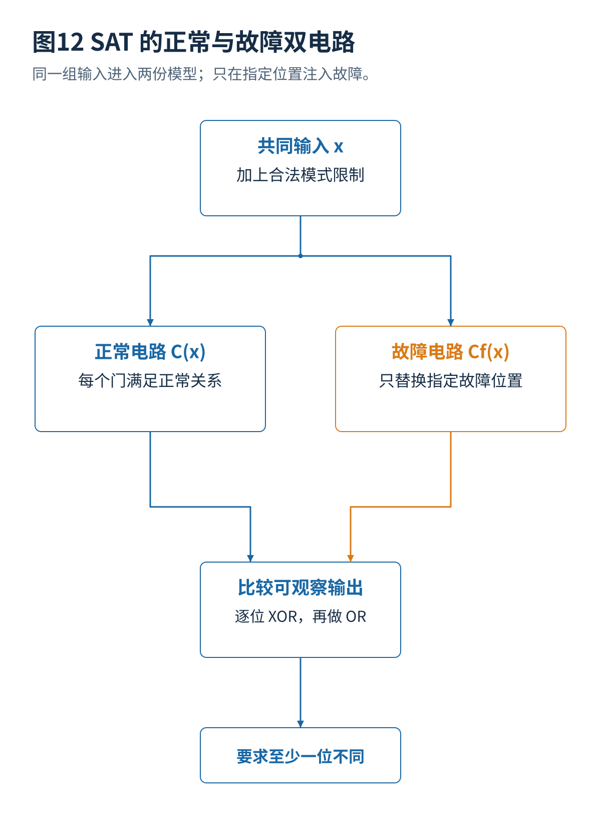
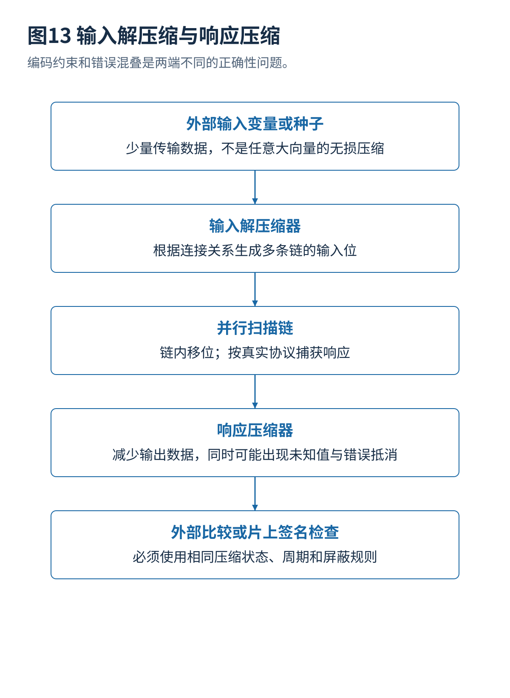
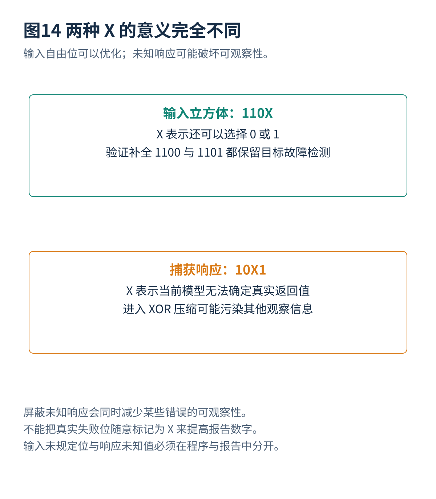
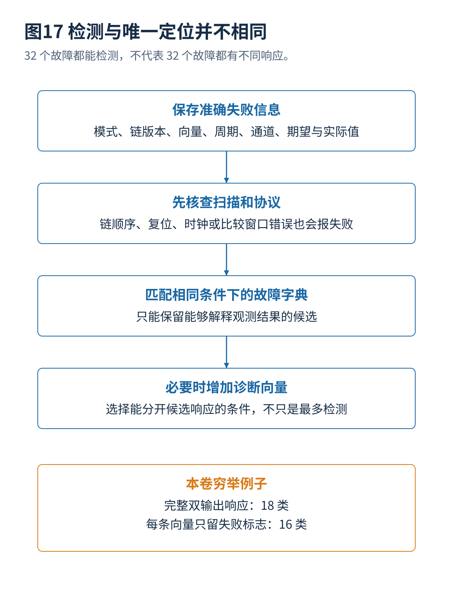
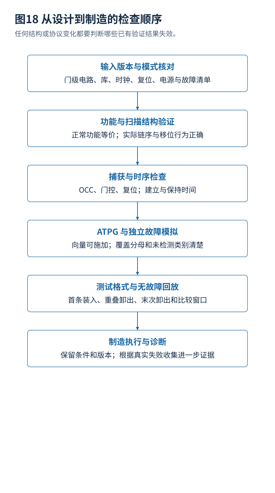

扫描链与 ATPG 插图精确几何检查
19 张图、285 个文字对象、72 条连接（其中 68 条带箭头）。当前检查问题数：0。
橙色实框是浏览器实际测量的文字矩形；橙色虚框是向外扩展 10 像素的文字避让区域；青色圆圈是连线起止位置。检查图与正文插图分开保存，不会把辅助框带入正文。
几何检查包括端点、进入方向、文字和边框、箭头尖端、路径穿过模块，以及没有明确连接点的交叉。当前字体环境为 Noto Sans CJK SC。换用其他字体或修改文字以后，应重新检查；没有附带字体文件。
图1 扫描测试的完整架构


查看 4 条连接的起点、终点与含义
| 连接编号 | 起点 | 终点 | 含义 |
|---|---|---|---|
| e1 | n0 | n1 | 从上一阶段进入下一阶段 |
| e2 | n1 | n2 | 从上一阶段进入下一阶段 |
| e3 | n2 | n3 | 从上一阶段进入下一阶段 |
| e4 | n3 | n4 | 从上一阶段进入下一阶段 |
图2 多路选择式扫描触发器



查看 5 条连接的起点、终点与含义
| 连接编号 | 起点 | 终点 | 含义 |
|---|---|---|---|
| functional | func | mux | 功能数据进入选择器的功能输入 |
| scan_data | si | mux | 串行数据进入选择器的扫描输入 |
| selected_data | mux | ff | 选择后的数据接入触发器 D 端 |
| mode | se | mux | SE 为选择控制，不是数据 |
| clock | clk | ff | 触发器由有效时钟沿保存所选数据 |
图3 四级扫描链与位序



查看 5 条连接的起点、终点与含义
| 连接编号 | 起点 | 终点 | 含义 |
|---|---|---|---|
| input | si | q0 | 最先接收串行输入的扫描触发器是 Q0 |
| shift0 | q0 | q1 | Q0 的旧值移入 Q1 |
| shift1 | q1 | q2 | Q1 的旧值移入 Q2 |
| shift2 | q2 | q3 | Q2 的旧值移入 Q3 |
| output | q3 | so | 沿前读取旧 Q3 作为串行输出 |
图4 装入、捕获与重叠卸出



查看 4 条连接的起点、终点与含义
| 连接编号 | 起点 | 终点 | 含义 |
|---|---|---|---|
| e1 | n0 | n1 | 从上一阶段进入下一阶段 |
| e2 | n1 | n2 | 从上一阶段进入下一阶段 |
| e3 | n2 | n3 | 从上一阶段进入下一阶段 |
| e4 | n3 | n4 | 从上一阶段进入下一阶段 |
图5 最长链决定理想移位长度


本图没有模块连接箭头；仅包含图表、矩阵或概念分项。
图6 LOC 与 LOS 的关键区别


查看 4 条连接的起点、终点与含义
| 连接编号 | 起点 | 终点 | 含义 |
|---|---|---|---|
| LOC-step0 | LOC0 | LOC1 | 装入初始状态之后才执行功能脉冲：发起 |
| LOC-step1 | LOC1 | LOC2 | 功能脉冲：发起之后才执行功能脉冲：捕获 |
| LOS-step0 | LOS0 | LOS1 | 最后移位：发起之后才执行切换扫描使能 |
| LOS-step1 | LOS1 | LOS2 | 切换扫描使能之后才执行功能脉冲：捕获 |
图7 扫描保持时间与锁存器


查看 2 条连接的起点、终点与含义
| 连接编号 | 起点 | 终点 | 含义 |
|---|---|---|---|
| source-data | src | lat | 源触发器的新数据先进入锁存器 |
| latch-output | lat | dst | 锁存器隔离过早到达的数据 |
图8 控制配置与扫描数据分开



查看 6 条连接的起点、终点与含义
| 连接编号 | 起点 | 终点 | 含义 |
|---|---|---|---|
| ctrl0 | l0 | l1 | 向下配置核级测试控制 |
| ctrl1 | l1 | l2 | 向下配置核级测试控制 |
| data0 | r0 | r1 | 扫描数据按规定处理并传输 |
| data1 | r1 | r2 | 扫描数据按规定处理并传输 |
| data2 | r2 | r3 | 扫描数据按规定处理并传输 |
| clock-control | l2 | r2 | 控制器向核内扫描逻辑提供模式和受控时钟，非数据直连 |
图9 故障模型与观察条件


本图没有模块连接箭头；仅包含图表、矩阵或概念分项。
图10 激活 n1 固定零并观察差异


查看 10 条连接的起点、终点与含义
| 连接编号 | 起点 | 终点 | 含义 |
|---|---|---|---|
| a-input | a | n1 | a=1 是激活 n1/sa0 的必要条件 |
| b-input | b | n1 | b=1 是激活 n1/sa0 的必要条件 |
| n1-stem | n1 | n1-fanout | n1 同时驱动 n2 与 z |
| to-or | n1-fanout | n2 | 差异进入 OR 的一个输入 |
| to-z | n1-fanout | z | 同一个 n1 干线也驱动 z 的一个输入 |
| c-input | c | n2 | c=0 避免 OR 门遮蔽 n1 的差异 |
| or-to-y | n2 | y | OR 的差异继续进入 XOR |
| d-stem | d | d-fanout | d 是两个门共用的输入，不是独立变量 |
| d-to-y | d-fanout | y | XOR 的确定输入不会遮蔽差异 |
| d-to-z | d-fanout | z | d 同时接 z 的第二输入；d=1 时 z 也能观察 |
图11 ATPG 搜索与结果判定


查看 6 条连接的起点、终点与含义
| 连接编号 | 起点 | 终点 | 含义 |
|---|---|---|---|
| fault-goal | fault | goal | 按目标逐步约束并检验电路 |
| goal-decide | goal | decide | 按目标逐步约束并检验电路 |
| decide-check | decide | check | 按目标逐步约束并检验电路 |
| retry | check | backtrack | 未发现有效检测时继续搜索或回溯 |
| success | check | detected | 观察到正常与故障差异后保存并验证 |
| loop | backtrack | decide | 还有合法分支时尝试另一项输入决定 |
图12 SAT 的正常与故障双电路



查看 6 条连接的起点、终点与含义
| 连接编号 | 起点 | 终点 | 含义 |
|---|---|---|---|
| shared | input | split | 正常与故障模型共享相同输入变量 |
| good-input | split | good | 共同输入进入正常模型 |
| bad-input | split | bad | 共同输入进入故障模型 |
| good-output | good | compare | 正常输出参与逐位比较 |
| bad-output | bad | compare | 故障输出参与逐位比较 |
| detection | compare | require | 差异条件为真就是一个故障检测向量 |
图13 输入解压缩与响应压缩



查看 4 条连接的起点、终点与含义
| 连接编号 | 起点 | 终点 | 含义 |
|---|---|---|---|
| e1 | n0 | n1 | 从上一阶段进入下一阶段 |
| e2 | n1 | n2 | 从上一阶段进入下一阶段 |
| e3 | n2 | n3 | 从上一阶段进入下一阶段 |
| e4 | n3 | n4 | 从上一阶段进入下一阶段 |
图14 两种 X 的意义完全不同



本图没有模块连接箭头；仅包含图表、矩阵或概念分项。
图15 移位与捕获的不同电气风险


查看 2 条连接的起点、终点与含义
| 连接编号 | 起点 | 终点 | 含义 |
|---|---|---|---|
| e1 | n0 | n1 | 从上一阶段进入下一阶段 |
| e2 | n1 | n2 | 从上一阶段进入下一阶段 |
图16 控制点与观察点


查看 6 条连接的起点、终点与含义
| 连接编号 | 起点 | 终点 | 含义 |
|---|---|---|---|
| functional | function | control | 正常信号进入控制点 |
| controlled | control | downstream | 功能模式透明传递，测试模式按设计控制 |
| test-select | test | control | 测试控制决定是否强制或选择内部节点 |
| original | internal | observe | 原功能连接产生观察分支 |
| normal-flow | observe | normal | 原来的功能数据继续传递 |
| capture-observe | observe | observer | 分支提供额外观察，需检查新增扇出与捕获规则 |
图17 检测与唯一定位并不相同



查看 3 条连接的起点、终点与含义
| 连接编号 | 起点 | 终点 | 含义 |
|---|---|---|---|
| e1 | n0 | n1 | 从上一阶段进入下一阶段 |
| e2 | n1 | n2 | 从上一阶段进入下一阶段 |
| e3 | n2 | n3 | 从上一阶段进入下一阶段 |
图18 从设计到制造的检查顺序



查看 5 条连接的起点、终点与含义
| 连接编号 | 起点 | 终点 | 含义 |
|---|---|---|---|
| e1 | n0 | n1 | 从上一阶段进入下一阶段 |
| e2 | n1 | n2 | 从上一阶段进入下一阶段 |
| e3 | n2 | n3 | 从上一阶段进入下一阶段 |
| e4 | n3 | n4 | 从上一阶段进入下一阶段 |
| e5 | n4 | n5 | 从上一阶段进入下一阶段 |
图19 近期研究改变的不是同一层


本图没有模块连接箭头；仅包含图表、矩阵或概念分项。